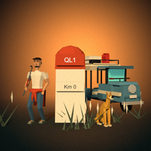

Quốc Lộ 1
Route 1: Vietnam · iPhone
Sương mù tràn xuống từ biên giới, vật nuôi trong làng hoá lạ. Thằng Tèo lái chiếc xe cũ cùng Chó Vàng chạy dọc Quốc lộ 1, từ cột cờ Lũng Cú về Mũi Cà Mau, nơi Má đang đợi.
Game chiến thuật sinh tồn theo lượt: mỗi màn là một câu đố nhỏ. Tìm xăng, cứu người, tránh tiếng động, chạy trước khi sương phủ kín. Đi qua 7 vùng miền với thời tiết riêng, gom đặc sản gửi về xây nhà cho Má ở Đất Mũi.
Fog rolls down from the border and the village animals have turned strange. Tèo and his dog drive an old van down National Route 1, from Vietnam's northern tip at Lũng Cú to the southern cape at Cà Mau, where his mother waits. A turn-based survival game where every level is a small puzzle.